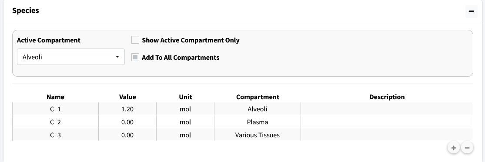
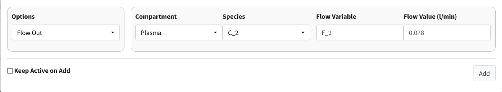
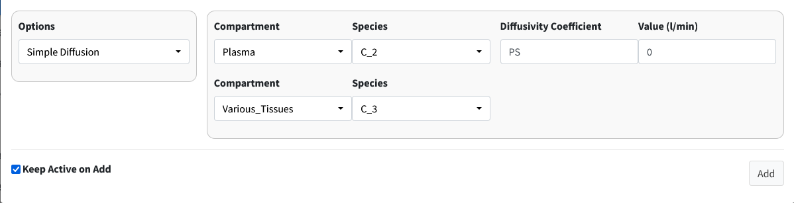
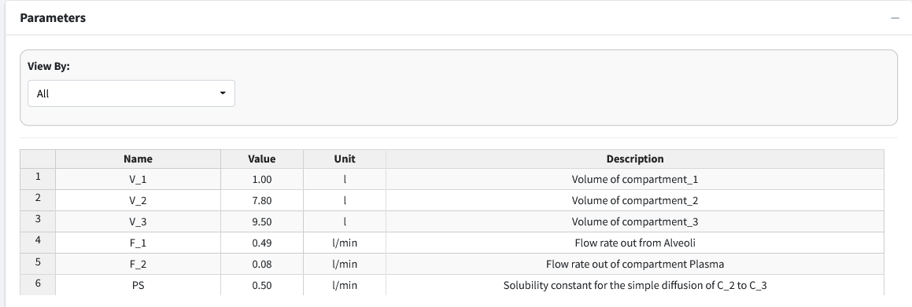
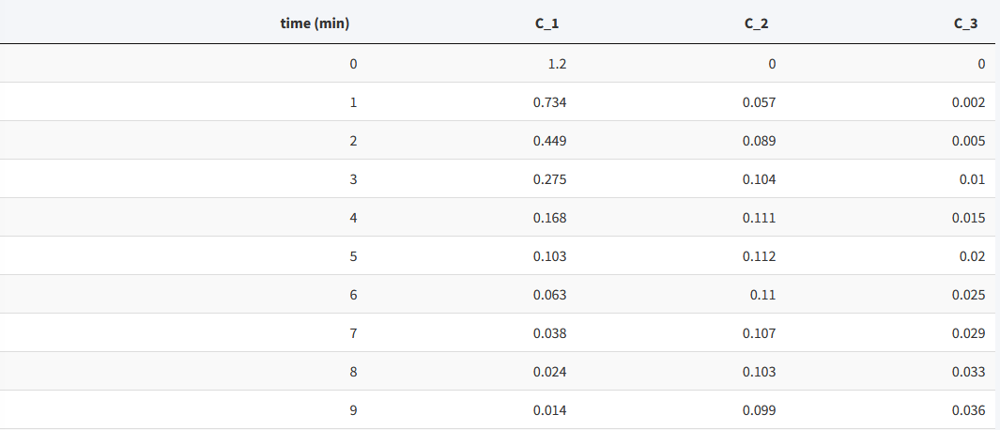
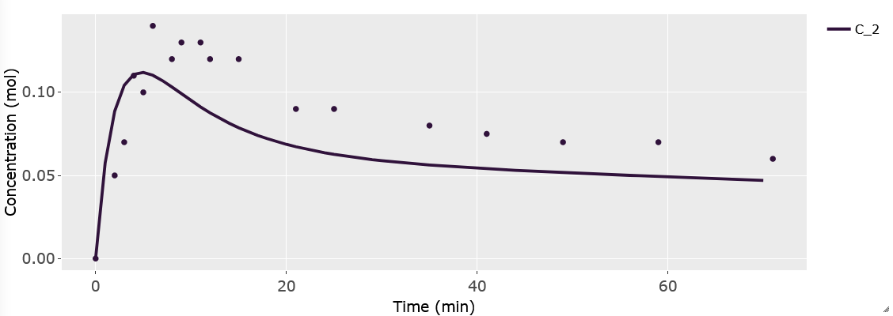
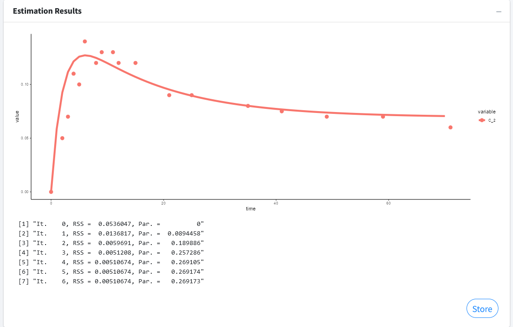

Parameter Estimation Tutorial
This is a basic parameter estimation tutorial. To download the example data used in this tutorial go to https://github.com/Jwomack7512-bio/BobTheBuilder/blob/main/shared_files/Nicotine_cigarette.csv.
We assume you have basic knowledge of creating a model and will skip showing every step of that process. Please see the parameter estimation documentation for details on the solver and options available to use in the solver.
We will construct the following simple three compartment model:

In the above diagram, we model the concentration of a drug, Nicotine (C), as it moves from the alveoli of the lungs, through the plasma of the body, and a compartment summarizing various tissues of the body. We assume Nicotine flows out of the alveoli with flow rate (F_1), into the plasma of the body. From there, Nicotine diffuses to various tissues of the body through simple diffusion (PS) and is also removed from the plasma at a flow rate of F_2. In this model, we are unsure of the value of PS and will use parameter estimation to estimate the value from experimental data that found the concentration of nicotine in the plasma at various timepoints. The starting concentration of C in the alveoli is 1.2 mol.
Build Model
To being buiding the model, we will add our three compartments with their corresponding volumes:
Compartment: Alveoli, Volume = 1 L
Compartment: Plasma, Volume = 7.8 L
Compartment: Various_Tissues, Volume = 9.5 L

Next, we will add a concentration (C) variable for nicotine to each compartment and give an initial concentration of 1.2 mol to C_1.

Next, we need to add the compartment input/outputs. We have three to add:
Flow between Alveoli and Plasma

Flow out of Plasma

Simple diffusion between Plasma and Various_Tissues

With all our model components constructed, we need to assign parameter values. We do not know the value of PS but we will give the model a reasonable starting estimate (0.5 L/min).

Note
The parameter table rounds to two decimal places. This is why F_2 shows as 0.08 in the table. If you double-click the value it will show as the appropriate 0.078.
For reference, here are the solved differential equations:

Move to the Execute Model tab and enter the time for this model:
Start Time = 0
End Time = 70
Time Step = 1
Unit = min

The beginning of the results table should look like this:

Visualize Model
Move to the Visualization tab. A starting plot should be generated that looks like:

We want to examine the concentration of Nicotine in plasma (C_2). Go into the Variables dropdown and remove variables C_1 and C_3.

We should import our data for Nicotine in the plasma to overlay with the plot. Scroll below the plot to the box header that is titled Import Data. Browse your desktop for the nicotine dataset (which can be downloaded from our
GitHub). Be sure to click the Apply Overlay checkbox to show the imported
data. For importing data, the first row of the data is the headers. The first column should be time while the remaining columns should be your concentrations at those times. The header names have to match the model names for the data to be correctly plotted.

The resulting plot should look like the figure below:

In this overlayed plot, we can see our model has the general shape of our data but doesn’t quite mimic it well. We will run parameter estimation for PS to see if we can find a better fit.
Perform Parameter Estimation
Go to the Modeler’s Toolbox Tab, subtab Parameter Estimation. Here, we will start by importing our data into this module.

Move to the next box on the page Select Parameters. Use the dropdown to select PS.

There are five columns in the generated table. They are as follows:
Parameters - the selected values to estimate.
Initial Guess - the starting value to begin parameter estimation at.
Lower Bound - the lowest acceptable value this parameter can be.
Upper Bound - the highest acceptable value this parameter can be.
Calculated Value - the found value from parameter estimation after calculations.
Values for Lower and Upper bound can be left blank if no bounds want to be used. Here we use the following:
Initial Guess - 0.50
Lower Bound - 0
Upper Bound - 1
Press the Run button and the program should output a value of approximately 0.10.

The next box Estimation Results will contain the model fit of the variable with its corresponding data along with the results of the iterations of the parameter estimation algorithm.

Press the Store button to overwrite your current parameters in the model with the estimated values.
Note
You can estimate as many parameters as you want with this setup. Just note that the more uncertainty you introduce into your model the longer the algorithm can take to find a solution. It can also affect the probability of finding a solution.